The app
KaraokeArcade runs in the browser on each guest's phone. Nobody installs anything. The app is built for touch. A mouse works in a desktop browser: click and drag to swipe.
The bottom bar has four tabs for everyone: Songs, Queue, Me and Scores. Admins get a fifth tab, Admin. The player is not a tab. The host sets it up once from Admin.
Join a room
- Scan the QR code on the TV.
- Drag the token into the slot.
- Under Join as, pick Returning user, New user or Guest. The room decides which of these it offers.
- Type your name. Push the start button.
- Select your singer.
- Read How to score. Push Continue.
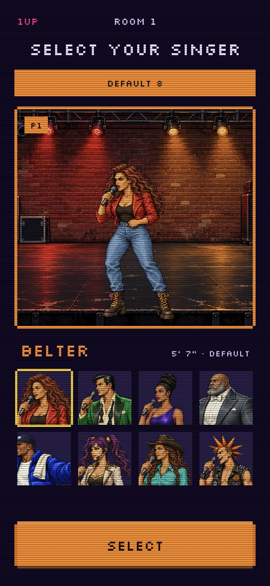
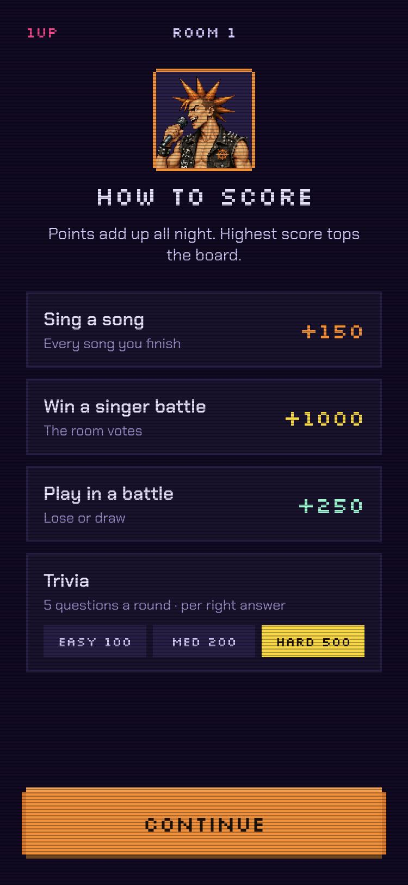
Your singer is you everywhere: in the queue, on the TV when you are up next, on the trivia podium and in a battle. To change it later, open the Me tab and push Change singer.
The first person to open a new server sees First run instead. That screen makes the admin account. See Getting Started.
Your turn card
The header on every screen shows your singer, your name, your points tonight and your place on the board. Under it, your turn card shows your next song, the wait until your turn and a meter that fills as your turn comes near.
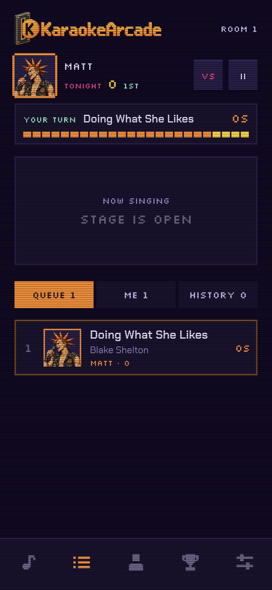
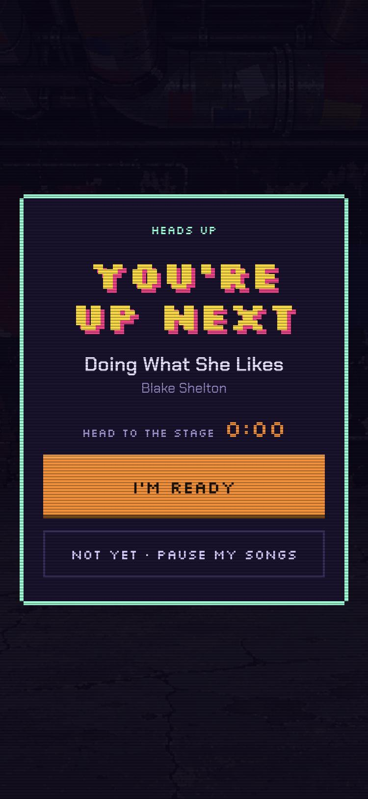
- II pauses your songs. The rotation skips you. Your songs stay on hold. Push the yellow key to resume.
- VS starts a Singer Battle challenge. See Singer Battle.
- Under one minute out, a full-screen You're up next alert takes over. Push I'm ready, or Not yet to pause your songs.
Songs
The Songs tab is the library. Search by artist or title. Push the star key to show only your starred songs. The two tabs list the library by Songs or by Artists.
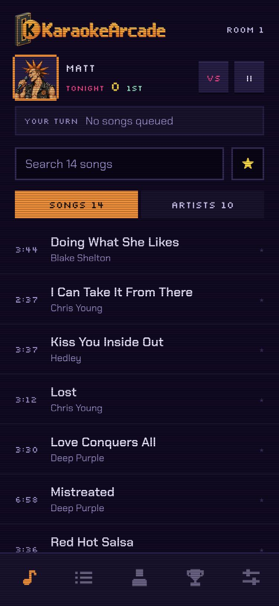
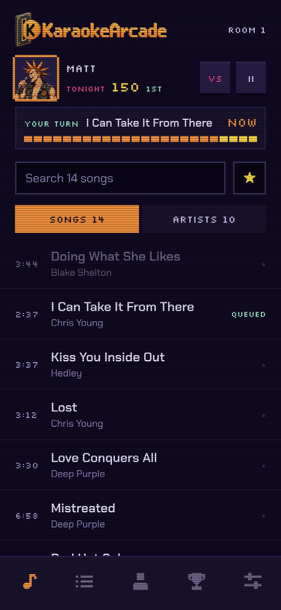
- Tap a song to queue it. Tap your own queued song again to take it back out.
- A song that somebody else queued says Queued.
- A song that was sung tonight is dimmed. It comes back when the host stops the room.
- Push the star on a row to star that song. The number on the star counts the stars from the whole room.
- If the room is paused or stopped, rows are disabled with a note.
A trailing [...] group in the filename shows as tags next to the artist. When a song has more than one media file, admins see a count after the title. The file in the media folder highest in the Media folders list plays.
Queue
The Queue tab shows the stage and the rotation. The Now singing banner shows who is on stage, on their own stage, with the song. When the stage is empty, the banner says so.
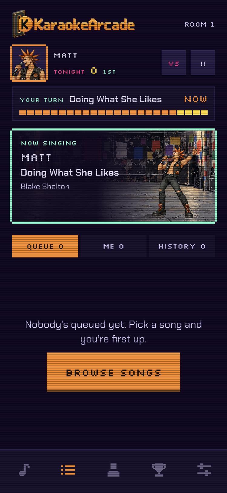
The three tabs under the banner:
- Queue: the room's rotation, in order, with a number on each row
- Me: your own upcoming songs, plus what you sang
- History: what the room sang tonight, newest first
The rotation is round-robin. A latecomer sings after the next singer, however long the queue was. A paused singer is skipped until they resume. A trivia round and a battle each have a row in the queue, and each costs one turn.
Swipe a row to the left to see its keys:
- Settings (gear): opens Song settings for that song
- Top: moves the song to be that singer's next song. It does not move the singer in the rotation. Admin only.
- Remove: removes an upcoming song
Admins can manage anyone's songs. A standard user or a guest can manage only their own. A song that was sung is locked and has no keys.
When a standard user or a guest signs out, their upcoming songs leave the queue. An admin's songs stay.
The Me tab
The Me tab is your own list. Hold a row to drag it. The order of your own songs is yours to set. The rotation between singers stays automatic. Swipe a row for its keys.
Song settings
Key shifts a song up or down by up to six semitones. The tempo does not change. The key belongs to your place in the queue, not to the song. Two singers can hold the same track in two keys on the same night. When you queue the same song again later, it comes back in the key you used last.
Me
The Me tab shows your singer on their own stage. Push Change singer to pick another one.
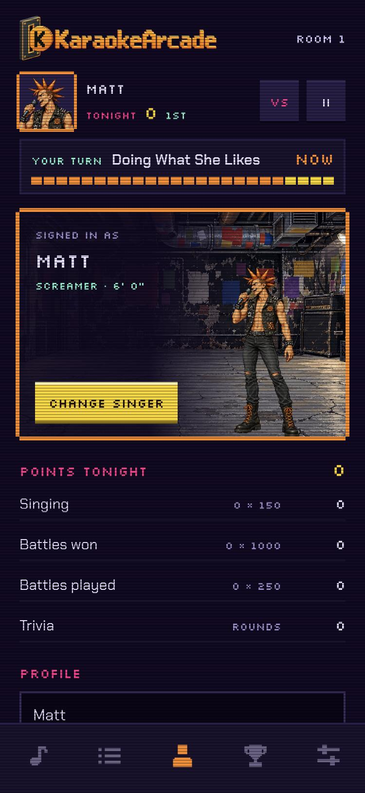
Points tonight lists where your points came from: songs sung, battles won, battles played and trivia. See Scores.
Profile lets you change your name, your password and your security question. Your name is what the queue and the TV show. You do not need your current password to make a change.
If you forget your password, push Forgot password? on the sign-in screen. Type your name and answer your security question. Five wrong answers lock the reset for 15 minutes. An account with no security question needs an admin to reset the password.
Under the profile: the room you are in, with a Leave key, and your song history. History is kept per song, so it carries from one night to the next.
Scores
Each room keeps one board for the night. Everyone who joins the room is on the board at zero. The Scores tab shows the board, with your own place and points at the top.
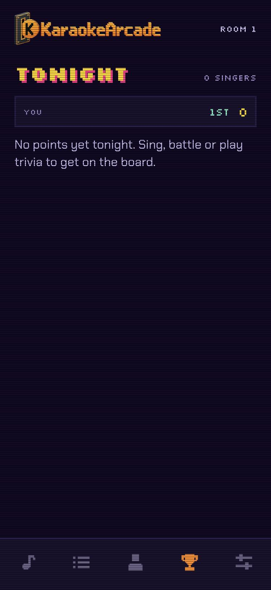
| Turn | Points |
|---|---|
| A song sung to the end | 150 |
| A trivia question: easy / medium / hard | 100 / 200 / 500 |
| A battle won | 1000 |
| A battle lost or drawn | 250 |
A turn that the host skips pays nothing. The TV shows the board between songs. When the host stops the room, the board clears.
Trivia
Trivia gives the room a game between two singers. The audience can play. Nobody needs a song queued. The host turns trivia on per room in the room editor.
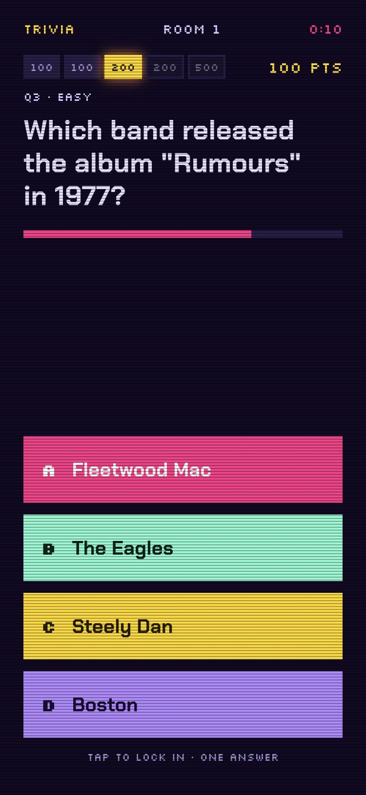
When trivia is on, one trivia round waits in the queue like a singer does. It comes round about once per lap. As one round is asked, the next one joins the back of the rotation.
A round asks five questions: two easy, two medium and one hard, in that order. Every phone shows the question, a countdown and four answer keys. The first key you tap counts. The TV shows the same question, and the players' singers stand on podiums under it.
After each question the right answer stays on screen for about six seconds. A right answer makes your singer do a victory. A wrong answer knocks your singer down. After the fifth question the TV shows the winner, then the next singer is on.
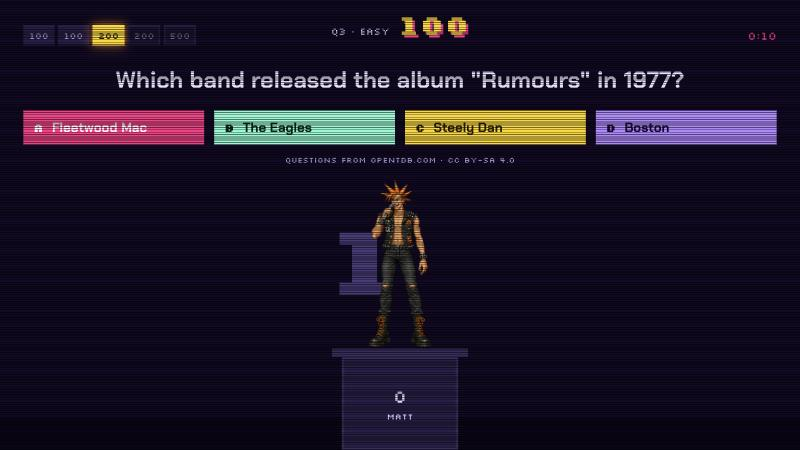
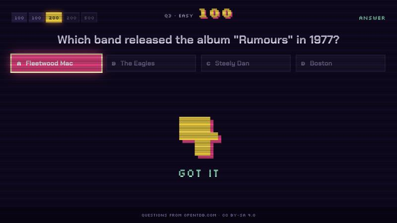
Room options:
- Play trivia rounds: turns rounds on for this room
- Answer time: how long a question stays open, from 5 to 60 seconds. The default is 20.
- Reset scores: clears this room's board
Questions come from the Open Trivia Database, music category. The server fetches them live when a round comes up. If the server cannot reach the internet, the round is skipped. A session token stops repeats. A server restart forgets the token. Question content is licensed CC BY-SA 4.0. The TV shows the attribution during each round.
Singer Battle
A battle is one turn with two singers in it. Each singer picks the other one's song. The host turns battles on per room in the room editor.
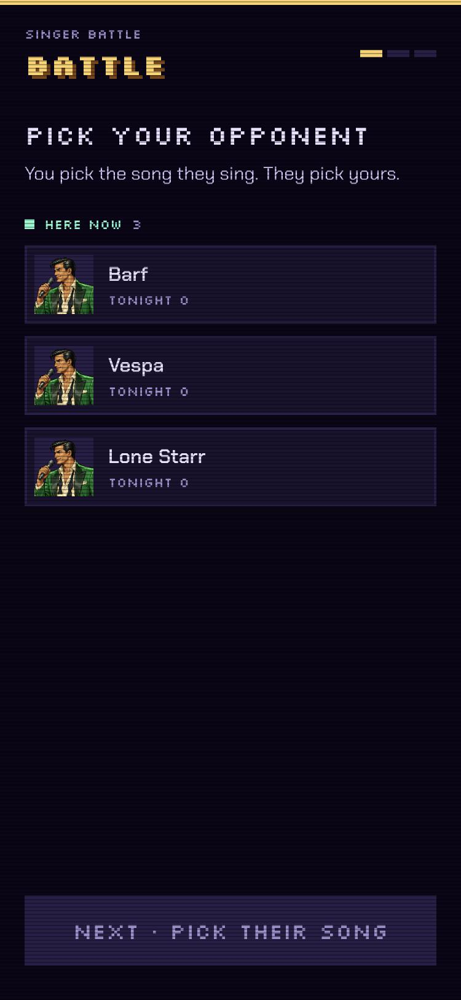
- Push VS in the header.
- Pick your opponent from the singers in the room.
- The library opens in picking mode. Tap the song they sing.
- Their phone shows the challenge, with the song. It stays open for 30 seconds.
- If they accept, the library opens on their phone. They tap the song you sing.
- If they decline, or the time runs out, your phone says No contest.
Each singer's own character is the one on stage. You do not pick your opponent's.
The battle takes over the challenger's next queued song and keeps its place in the rotation. If the challenger has nothing queued, the battle joins the back of the queue.
On the TV, the battle runs as one sequence:
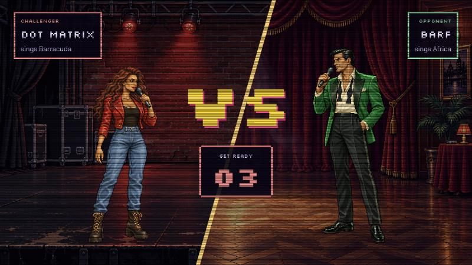
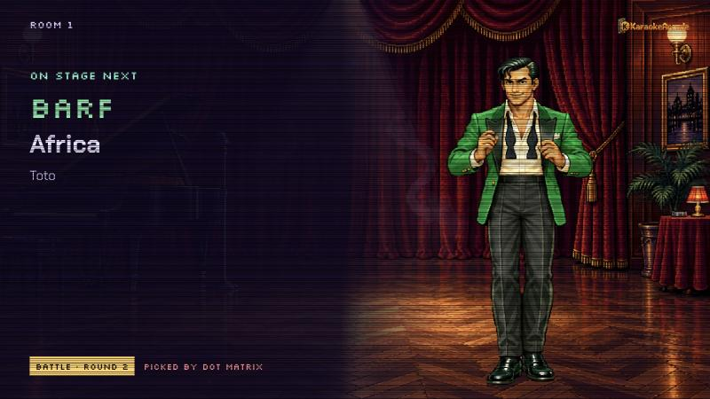
- Versus: both singers, both songs, a countdown, then Begin.
- The challenger's turn, then the opponent's turn. Each song is capped at two minutes.
- The room decides. See Deciding the winner.
- The verdict: the winner's victory, the loser's knockdown, and the points.
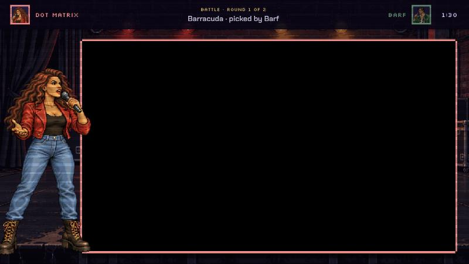
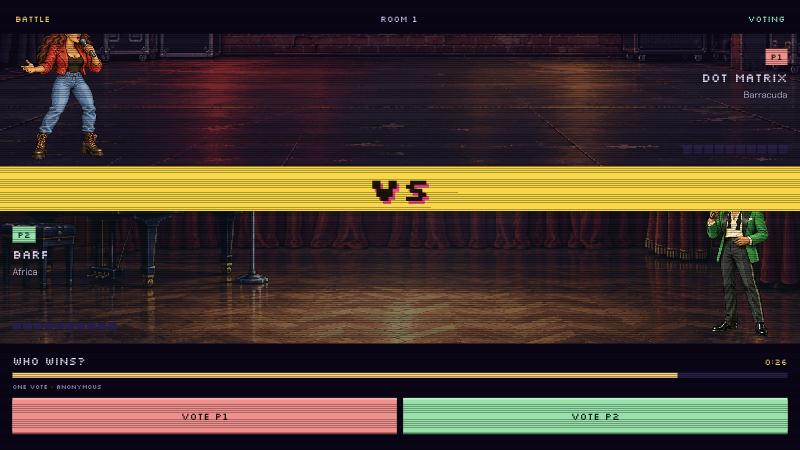
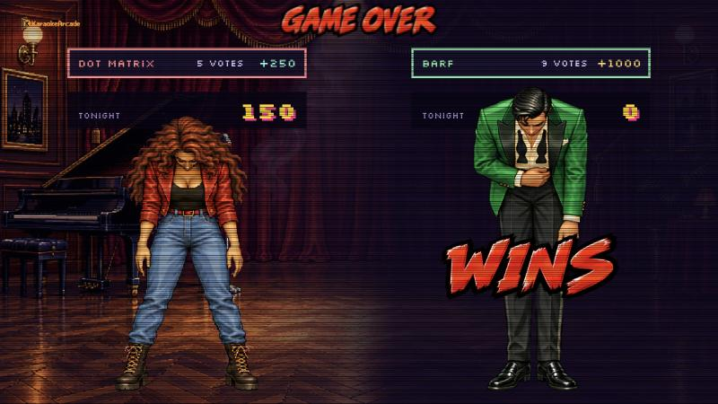
A whole battle takes about five minutes and costs one place in the queue.
Deciding the winner
By vote (the default). After both songs, every phone in the room shows two keys, one per singer. The two singers cannot vote. One vote each. The vote is open for 30 seconds. The split fills live on the TV as the votes come in.
By crowd noise. Turn on Judge singer battles by crowd noise in the room editor. The player listens through its microphone while the room cheers for each singer in turn. The louder cheer wins.
The winner gets 1000 points. The loser gets 250. On a draw both get 250. A battle that the host skips before the verdict pays nothing. The loser's phone offers a Rematch.
Singer sets
The default set has eight singers. A Halloween set has eight more. An admin can add a set: put a folder of singers next to the default one under assets/battle/fighters, then turn it on per room in the room editor. CharacterAssetGenerator makes the sprite sheets a singer is made of.
Admin (admin only)
The Admin tab holds four panels: Rooms, Users, Player and Media folders.
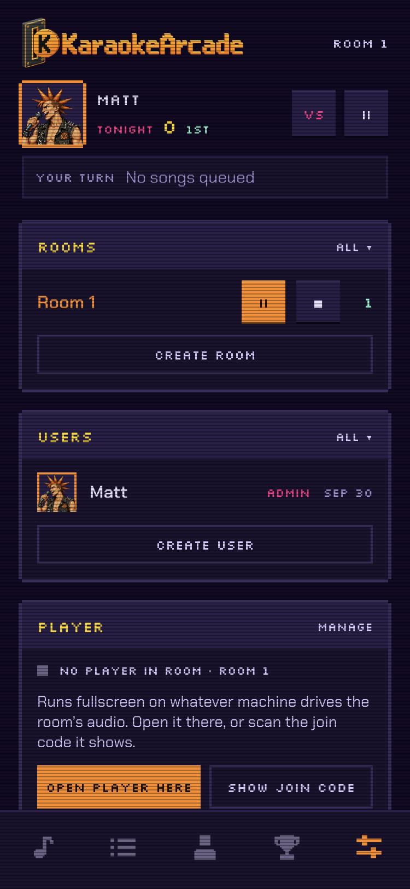
Rooms
KaraokeArcade uses rooms to keep sessions apart. Each room has its own queue and its own board. Guests pick a room when they sign in.
Each room's row has two keys:
- Play / Pause: a playing room offers Pause; a paused or stopped room offers Play. In a paused room the player stops, and nobody new can sign in or queue. Nothing is lost.
- Stop: with a confirmation, empties the queue, resumes paused singers, clears the played list and clears the board. Use it to reset a room for a new night.
Tap the room name to open the room editor:
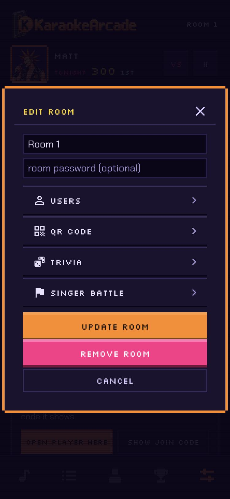
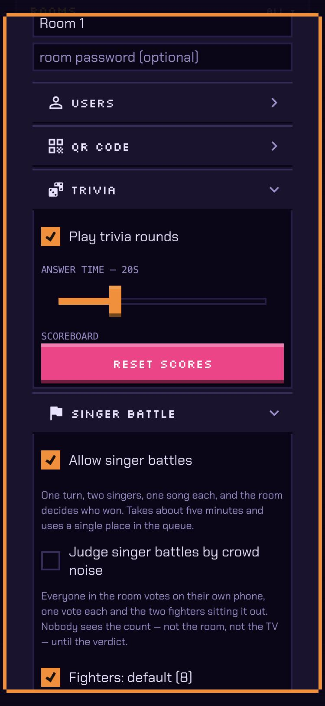
- Name and an optional password
- Users: allow new standard users and/or new guests. By default only existing accounts can join.
- QR code: show the join code on the TV, include the room password, and set its size and opacity
- Trivia: see Trivia
- Singer Battle: see Singer Battle, plus which singer sets the room offers
Users
The Users panel lists accounts with their singers. Admins can create, edit or remove users, and filter the list by room.
Player panel
The Player panel is the only place the player is managed from.
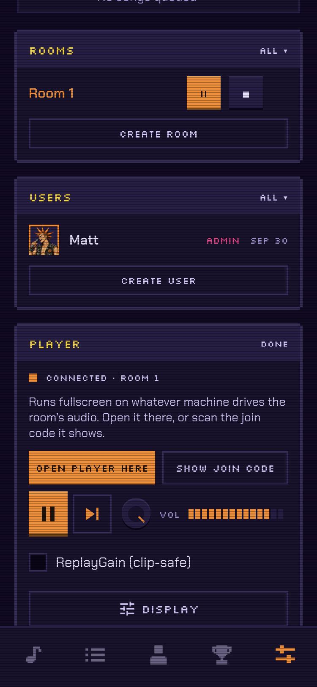
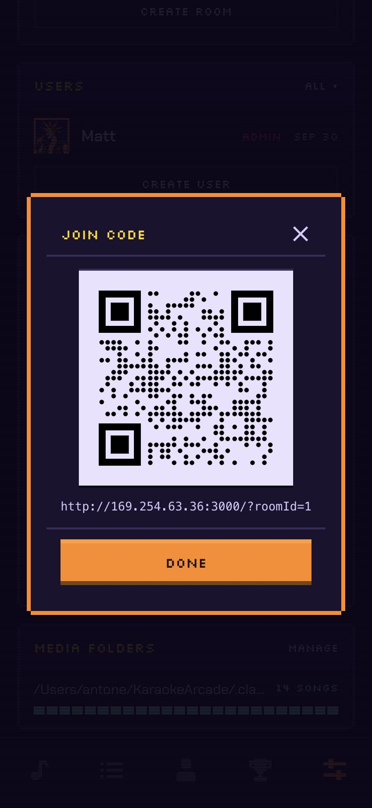
- Open player here: opens the player in a new tab on this machine. Do this on the machine connected to the TV and the speakers.
- Show join code: shows the room's QR code and link.
- Transport: play/pause, Next and volume, shown when a player is connected. Next is the one skip for every kind of turn. A skip during a battle ends the battle for the room.
- ReplayGain (clip-safe): uses ReplayGain tags to even out volume between songs. Turn it on only when your media is tagged.
- Display: the visualizer (on/off, presets, sensitivity) and the lyrics size and background. Video background keying is set per media folder.
Media folders
Add the folders that hold your songs. See supported media files. Drag the folders to change their order. When a song has more than one media file, the file in the highest folder plays.
Player
The player is part of the app. It runs fullscreen on the machine connected to the TV and the speakers. The latest versions of Chrome, Edge, Firefox and Safari are supported.
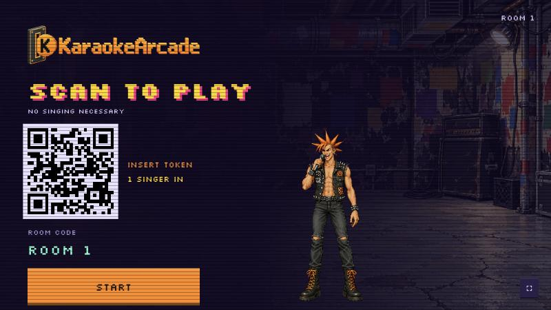
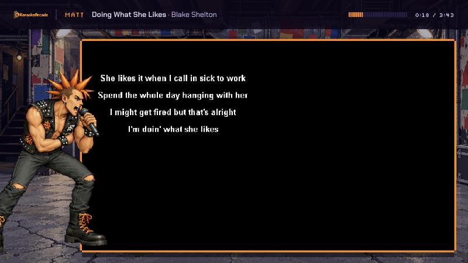
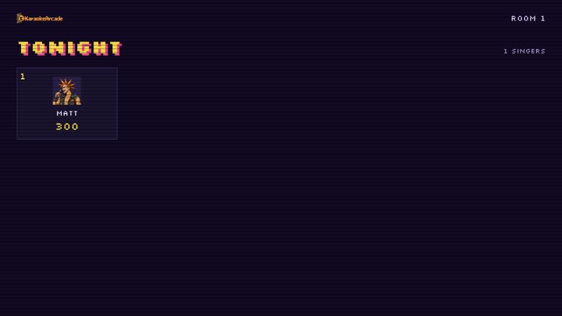
To start a player, sign in as an admin on the machine that drives the TV, then push Open player here in Admin › Player. You can also go to /player.
The TV shows these screens:
- Scan to play: the join code and the room. One figure stands in the room for each singer who is in, as the singer they picked, up to forty.
- Tonight's scores: every singer of the night as a card, best first. It takes turns with the join screen while the room waits.
- On stage next: the next singer, on their own stage, with their song. The three singers after them show at the bottom.
- A song: the lyrics, with the singer beside them and a progress bar at the top.
- Trivia rounds and battles take over the whole screen. See Trivia and Singer Battle.